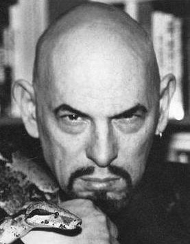

Anton Szandor LaVey
Anton Szandor Lavey, született nevén: Howard Stanton Lavey, 1930. április 11-től 1997. október 29-ig élt. Amerikai szerző, előadó, és sátánista volt. Megalapítója volt a Sátán Egyházának és a sátánizmusnak, mint vallásnak (ez a LaVey-i sátánizmus). Szerzője volt a The Satanic Bible, The Satanic Rituals, The Satanic Witch, The Devil's Notebook és a Satan Speaks! könyveknek. Ezen felül három albumot is kiadott, ezek a The Satanic Mass, Satan Takes a Holiday és a Strange Music. LaVey nem tekintette Sátánt nagyobb rendű lénynek, csupán egy történelmi és irodalmi alaknak, ami a földi értékeket szimbolizálja.
Életrajza
LaVey a Chicagoi Illinois városban született 1930. április 11-én. Apja Michael Joseph, anyja Gertrude Augusta née Caultron. Szülei támogatták zenei érdeklődését, kedvenc zenei hangszerei a zongora és a tangóharmonika volt. A Tamalpais Középiskolába járt Mill Valley, Kaliforniában egészen 16 éves koráig. Ekkor elhagyta iskoláját, és csatlakozott a Clyde Beatty Cirkuszba, majd később karniválokba ment. Azonban Lawrence Wright, újságíró, arra a következtetésre jutott, hogy semmi bizonyíték nincs arról, hogy LaVey valaha is cirkuszban dolgozott volna.
1948 telén LaVey orgonistaként kezdett játszani bárokban, szórakozóhelyeken. Egy géniusznak gondolta magát zenei készségei miatt. Feltételezhetően, egy akkori táncosnővel, Marilyn Monroeval afférje volt Los Angelesben, de azonban ez is vitatott téma azoktól, akik már akkoriban ismerték Marilyn Monroe-t, és a Mayan Filmszínház menedzserét; ők azt állítják, hogy Marilyn soha nem volt a Mayan színház táncosnője, és a színház soha sem volt bohózatos "célra" használva.
Életrajza szerint, LaVey visszaköltözött San Franciscoba. 1950-ben LaVey megismerte Carole Lansing-et. A rákövetkező évben házasodtak, amikor Lansing 15 éves volt. 1952-ben lett egy lánygyermekük, Karla LaVey. LaVey ezután állítólagosan fényképész lett a San Franciscoi Rendőr-főkapitányságon, ahol ebben a beosztásban három évig dolgozott. Később felületesen médiumi nyomozóként dolgozott, ahol univerzális telefonszámokkal foglalkozott (ezek az ún. 800-as hívások). Később bizonytalanságot okozott másoknak, hogy LaVey valaha tényleg ott dolgozott-e.
Sátán Egyháza
Anton LaVey ismert személyiség lett San Francisco-ban a paranormális kutatásai és az orgonista előadásain keresztül. Ezen felül egy halottaském furgonját vezette, és egy fekete leopárdot tartott háziállataként, akit Zoltan-nak hívott. Sok San Francisco-i hírességet becsalt gyűléseire. Ezek a vendégek pl.: Michael Harner, III. Chester A. Arthur, Forrest J Ackerman, Fritz Leiber, Cecil E. Nixon és Kenneth Anger. LaVey egy csoportot alakított a Trapéz Rendje néven, amely később a vezető rétege lett a Sátán Egyházának.
LaVey péntek esténként tanulmányozásokat tartott az okkultizmusról és rituálékról. LaVey elmondása szerint a Walpurgis-éjen, 1966. április 30-án szertartásosan levágatta haját kopaszra az ősi hóhérok hagyományaként, majd elrendelte a Sátán Egyházának alapítását és kihirdette 1966-ot az "Első Évnek", Sátán korszakának első évét. Később kiderült, hogy LaVey azért vágatta le haját kopaszra mert elveszített egy fogadást; tehát ősi hagyomány történetét csak kitalálta.
Az 1960-as évek végén, 1970-es évek elején LaVey egybeolvasztotta Friedrich Nietzsche, Ayn Rand, H. L. Mencken és a szociáldarwinizmus elméleteit Sátán Egyházának az ideológiájával és rituáléival.
Későbbi történtek, és halála
Az FBI 1980-ban kihallgatta LaVey-t egy titkos tervével kapcsolatban, ami Ted Kennedy meggyilkolásáról szólt. LaVey arról számolt be az ügynököknek, hogy az egyházának követői "fanatikusak, szektatagok és különcek". Az FBI ügynökei arról jelentettek, hogy LaVey-nek szimplán csak pénzügyi érdekei voltak az egyházzal kapcsolatban.
Családja beszámolása szerint Anton Szandor LaVey 1997. október 29-én halt meg a San Francisco-i St. Mary's Medical Centerben szívelégtelenségben, azonban halotti bizonyítványa 1997. október 31-ét mutatja.